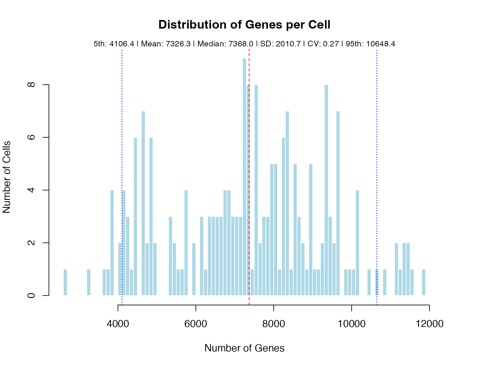

Calculate gene co-expression across all cell types
Source:R/coexpression_analysis.R
calculate_gene_coexpression_all_celltypes.RdCalculates co-expression patterns for a gene across all cell types, returning both overall and cell type-specific correlations.
Usage
calculate_gene_coexpression_all_celltypes(
scht_obj,
gene,
method = "pearson",
min_cells = 10,
min_expression = 0
)Examples
# Load example data
data(gene_counts_blood)
data(transcript_counts_blood)
data(transcript_info)
data(sample2stage)
# Create IntegratedSCHT object with cell type information
integrated_scht <- create_scht(
gene_counts = gene_counts_blood,
transcript_counts = transcript_counts_blood,
transcript_info = transcript_info,
cell_info = sample2stage,
qc_params = list(
min_genes_per_cell = 4000,
max_genes_per_cell = 10000,
min_cells_expressing = 0.02,
min_expr = 1e-6
),
n_hvg = 3000,
require_cell_type = TRUE, # Creates IntegratedSCHT
verbose = FALSE
)

#>
#> === Sparsity Analysis for Current Dataset ===
#>
#> 1. Original Transcript Matrix:
#> Number of genes: 55,487
#> Number of isoforms: 142,238
#> Number of cells: 205
#> Non-zero elements: 2,457,789
#> Zero elements: 26,701,001
#> Total elements: 29,158,790
#> Sparsity: 91.57%
#>
#> 2. Filtered Transcript Matrix (Post-QC HVG):
#> Number of genes: 1,936
#> Number of isoforms: 7,327
#> Number of cells: 181
#> Non-zero elements: 73,057
#> Zero elements: 1,253,130
#> Total elements: 1,326,187
#> Sparsity: 94.49%
#>
#> 3. SCHT Structure (Post-QC HVG):
#> Non-zero elements: 73,057
#> Zero elements: 154,780
#> Total elements: 227,837
#> Sparsity: 67.93%
#>
#> 4. Naive 3D Tensor (Post-QC HVG):
#> Required dimensions: 1,936 x 21 x 181
#> Non-zero elements: 73,057
#> Zero elements: 7,285,679
#> Total elements: 7,358,736
#> Sparsity: 99.01%
#>
#> 5. Zero Elements Avoided by SCHT:
#> vs Original Matrix: 26,546,221
#> vs Filtered Matrix: 1,098,350
#> vs Naive 3D Tensor: 7,130,899
#>
#> 6. Memory Efficiency Summary:
#> SCHT uses only 0.78% of original matrix size
#> SCHT uses only 17.18% of filtered matrix size
#> SCHT uses only 3.10% of naive tensor size
# Use specific genes known to have multiple isoforms
test_gene <- "Mapk13" # Known multi-isoform gene in the example data
tryCatch({
# Calculate coexpression across all cell types
ct_cor_results <- calculate_gene_coexpression_all_celltypes(
integrated_scht,
gene = test_gene,
method = "pearson",
min_cells = 10
)
# Examine overall correlation
cat("\nOverall correlation matrix for", test_gene, ":\n")
print(round(ct_cor_results$overall$cor_matrix, 2))
# Examine cell type-specific patterns
cat("\nFound correlations for",
length(ct_cor_results$cell_types), "cell types\n")
# Compare correlations across cell types
for (ct in names(ct_cor_results$cell_types)) {
ct_data <- ct_cor_results$cell_types[[ct]]
cat("\nCell type:", ct, "\n")
cat("Number of cells:", ct_data$n_cells, "\n")
cat("Number of isoforms:", ct_data$n_isoforms, "\n")
# Show correlation matrix
if (!is.null(ct_data$cor_matrix)) {
cat("Correlation matrix:\n")
print(round(ct_data$cor_matrix, 2))
}
}
# Identify cell type-specific switching
switching_summary <- lapply(names(ct_cor_results$cell_types), function(ct) {
ct_data <- ct_cor_results$cell_types[[ct]]
if (!is.null(ct_data$cor_matrix)) {
switching <- detect_isoform_switching(ct_data)
return(data.frame(
cell_type = ct,
n_switching_pairs = switching$n_switching_pairs,
n_strong_switching = switching$n_strong_switching
))
}
return(NULL)
})
switching_df <- do.call(rbind, switching_summary[!sapply(switching_summary, is.null)])
if (!is.null(switching_df) && nrow(switching_df) > 0) {
cat("\nSwitching summary by cell type:\n")
print(switching_df)
}
# Use different correlation methods
ct_cor_spearman <- calculate_gene_coexpression_all_celltypes(
integrated_scht,
gene = test_gene,
method = "spearman"
)
# Compare methods
cat("\nComparing Pearson vs Spearman correlations (overall):\n")
pearson_vals <- ct_cor_results$overall$cor_matrix[upper.tri(ct_cor_results$overall$cor_matrix)]
spearman_vals <- ct_cor_spearman$overall$cor_matrix[upper.tri(ct_cor_spearman$overall$cor_matrix)]
cat("Mean absolute difference:",
round(mean(abs(pearson_vals - spearman_vals)), 3), "\n")
}, error = function(e) {
cat("Error analyzing gene", test_gene, ":", e$message, "\n")
})
#>
#> Overall correlation matrix for Mapk13 :
#> ENSMUST00000233984 ENSMUST00000124099 ENSMUST00000129096
#> ENSMUST00000233984 1.00 0.41 0.19
#> ENSMUST00000124099 0.41 1.00 0.84
#> ENSMUST00000129096 0.19 0.84 1.00
#> ENSMUST00000233109 0.31 -0.10 -0.44
#> ENSMUST00000233051 0.47 -0.32 -0.66
#> ENSMUST00000233676 0.78 0.68 0.47
#> ENSMUST00000004986 0.57 0.39 0.12
#> ENSMUST00000233109 ENSMUST00000233051 ENSMUST00000233676
#> ENSMUST00000233984 0.31 0.47 0.78
#> ENSMUST00000124099 -0.10 -0.32 0.68
#> ENSMUST00000129096 -0.44 -0.66 0.47
#> ENSMUST00000233109 1.00 0.55 0.13
#> ENSMUST00000233051 0.55 1.00 0.33
#> ENSMUST00000233676 0.13 0.33 1.00
#> ENSMUST00000004986 0.19 0.44 0.73
#> ENSMUST00000004986
#> ENSMUST00000233984 0.57
#> ENSMUST00000124099 0.39
#> ENSMUST00000129096 0.12
#> ENSMUST00000233109 0.19
#> ENSMUST00000233051 0.44
#> ENSMUST00000233676 0.73
#> ENSMUST00000004986 1.00
#>
#> Found correlations for 0 cell types
#>
#> Comparing Pearson vs Spearman correlations (overall):
#> Mean absolute difference: 0.091